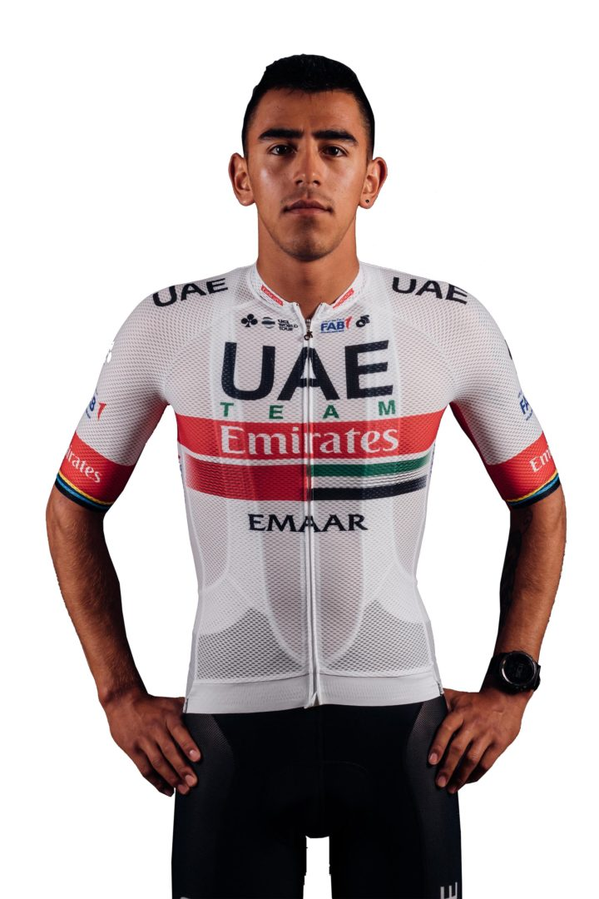
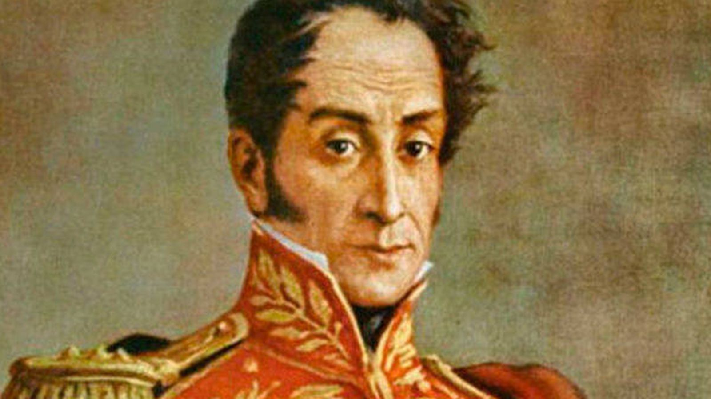
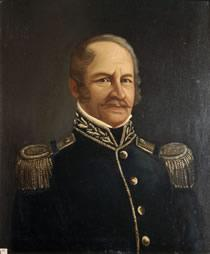

Paipa ha tenido a lo largo de la historia personajes que han dado sus aportes a la sociedad en diferentes ámbitos como en la independencia de Colombia, el deporte, política, entre otros. Debido a su gran riqueza cultural (debido a que es epicentro histórico y turístico a nivel nacional), Paipa ha posicionado a varias personas en diferentes lugares del país y hacer parte de los libros de historia del mismo. Algunos de los personajes paipanos másimportantes son:
Sebastián Molano es un ciclista paipano perteneciente al equipo Team Emirates, del cual también es integrante Tadej Pogacar, el último campeón del Tour de Francia. Molano ha participado en varias competencias a nivel nacional e internacional reconocidas en el mundo del ciclismo. Este ciclista es reconocido por su potencia, importante para las etapas de embalaje, igualando a reconocidos sprinter a nivel mundial como Fernando Gaviria o Peter Sagan.
El libertador, pese a que es oriundo de Caracas, Venezuela, fue uno de los personajes de la historia que participaron en la historia de Paipa, de Boyacá y de Colombia. Debido a que en el municipio sucedió la batalla del Pantano de Vargas el 25 de julio de 1819, Bolívar utilizó por tres días seguidos a Paipa como campamento mientras se le hacía inteligencia a las tropas españolas comandadas por Jose María Barreiro. Durante la batalla, una de las más largas y más sangrientas dentro de la campaña de la independencia, Bolívar se ubicaba a un par de Kilómetros del pantano desesperado, hasta la llegada de los 14 lanceros de Rondón que cambiaron la trayectoria de la batalla a favor del ejército patriota. Además de ello, Bolívar utilizó lugares como la Casona del Salitre como hospedaje para luego llegar a Tunja, posteriormente a Bogotá para tomar la Nueva Granada y declarar victoria.
Su nombre original es James Rooke. Fue un militar nacido en Dublín alrededor de 1770 y fallece tras resultar herido en la batalla del Pantano de Vargas en 1819 haciendo parte de la legión británica. Rooke se unió al ejército británico en 1791 en campñas contra Francia, alcanzando el rango de mayor para 1802, para luego retirarse de la armada en 1815 después de la batalla de Waterloo contra Napoleón Bonaparte. LUego de ello se mudó en 1816 al Caribe, en donde integró la legión británica para ser nombrado comandante de la misma. Rooke fue herido en el brazo izquierdo, pero debido a la gravedad de las heridas murió. El parque del municipio de Paipa se llama como él dado su sacrificio en la campaña de la independencia de Colombia.
